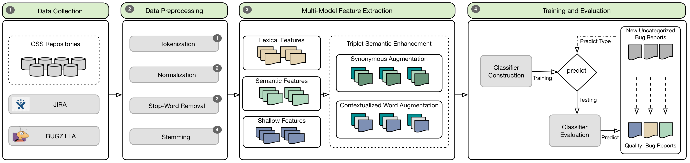

A Multi-Model Framework for Semantically Enhancing Detection of Quality Bugs
Project Description. Maintaining and delivering a high-quality software system is a delicate process. One way to ensure that a software system achieves the desired quality is to systematically monitor and timely address quality-related concerns. Quality concerns, such as reliability, usability, performance, and maintainability, among others, can have a broad impact in ensuring that a system remains consistently reliant and available at all times. In contrast, when such concerns are overlooked, become difficult to navigate, or maintain, system-wide failures could emerge. Typically, these failures can chiefly hinder the core functionality of the system and produce a large amount of quality bug reports. For the developers, manually examining these high-impacted quality-related bug reports in open-source issue tracking systems can become a prohibitively expensive and impractical task to deliver. Partly, because such bugs often require expert knowledge to address them. The more perplexing concern is the fact that these bugs are deemed difficult to detect due to their intertwined relationship with functional bugs. Even worse, there are instances when several types of quality concerns are intertwined among each other. Seemingly, these scenarios make quality concerns non-discernible. To address this problem, we implemented a multi-model framework (BugReportSoftQualDetector) to automatically detect quality-related content in bug report descriptions. Specifically, we leveraged a weighted combination of semantics, lexical, and shallow features in conjunction with the Random Forest model to detect six most emerging quality concerns present in bug report descriptions. Our results indicate that our approach outperformed both state-of-the-art approaches, one that leveraged lexical features and the other that leveraged shallow features. To assess our approach, we examined six diverse open-source domains hosted from two issue-tracking systems such as Jira and Bugzilla. Through a grounded theory approach, we created a catalog of rules and employed ISO 25010 taxonomy and the FURPS taxonomy to categorize bug reports into six quality types of: performance, maintainability, reliability, portability, usability, and security. We then employed content analysis to manually label 5,400 bug reports. Finally, we included a case study for tracing and visually mapping quality concerns into the codebase.
